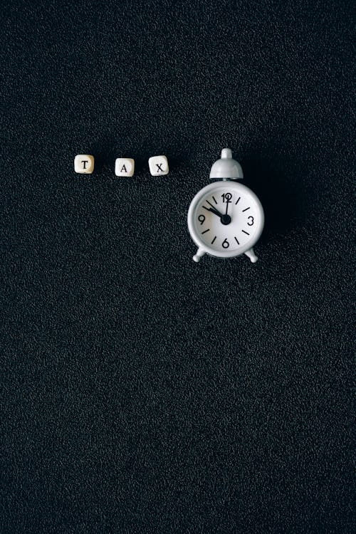
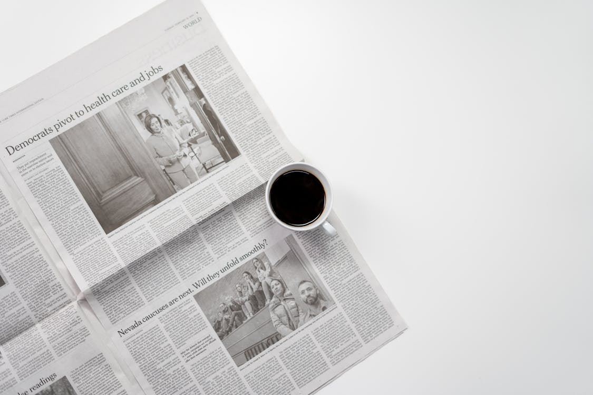

Huawei Technologies, a formidable player in fields from smartphones to electric vehicles, is also looming large in China's fragmented robotics industry amid the country's drive to be a global leader in the field.

In the United States, the practice of changing clocks for DST continues. Despite legislative efforts, such as the Sunshine Protection Act aimed at making DST permanent, no federal changes have been enacted. Consequently, Americans will continue to adjust their clocks twice a year..
Looking ahead, New York City is preparing to celebrate the Year of the Snake with its 2025 Lunar New Year Parade and Festival in Chinatown. Scheduled for Sunday, February 16, 2025, at 1 p.m., the parade is expected to draw hundreds of thousands of attendees, featuring vibrant cultural displays and festivities
Israeli Prime Minister Benjamin Netanyahu has announced plans for Israeli troops to occupy a Syrian buffer zone indefinitely, raising concerns about potential violations of a 1974 ceasefire agreement. This decision comes amid Israel's ongoing conflict in Gaza with Hamas, which has resulted in over 45,000 Palestinian deaths. The U.N. Security Council is calling for a Syrian-led political process following the recent overthrow of President Bashar Assad by rebels.

Former middleweight champion Israel Adesanya is scheduled to fight Nassourdine Imavov in Riyadh, Saudi Arabia, on February 1, 2025. This marks Adesanya's first non-title fight in six years, ending a 14-fight streak in UFC pay-per-view events. Despite the change, Adesanya remains focused, stating that it does not feel any different and he still gets paid, emphasizing his determination to halt Imavov.
Huawei Technologies, a formidable player in fields from smartphones to electric vehicles, is also looming large in China's fragmented robotics industry amid the country's drive to be a global leader in the field.
Huawei Technologies, a formidable player in fields from smartphones to electric vehicles, is also looming large in China's fragmented robotics industry amid the country's drive to be a global leader in the field.
Huawei Technologies, a formidable player in fields from smartphones to electric vehicles, is also looming large in China's fragmented robotics industry amid the country's drive to be a global leader in the field.


If you’d like to give back in some way but aren’t sure how to make a difference, you wouldn’t be alone. Many of us feel called to raise money for a cause that’s close to our hearts but aren’t sure what steps to take. What are the best charities to donate to? Is traditional fundraising the way to go, or is it better to use online fundraising sites?
There is a time and place for fundraising drives and charity events, but it’s no surprise that one of the best ways to raise money for charity these days is through crowdfunding. An online fundraiser has zero overhead and gives you the freedom to share your cause with anyone with just a few clicks of the mouse.
To help you sort through the many great sources for charity funding on the internet, we’ve put together this list of the best charity fundraising sites. Giving back just got a whole lot easier.
A decent fundraising website will offer all the basic features, like an easy setup and low fees, but the best donation sites will blow you away with the extras. Factors such as 24/7 customer support and zero fees can completely change your fundraising experience with a smoother experience, and a larger sum raised.
There is a lot to consider when looking to give back with charity fundraising. Is it crucial to receive the funds as quickly as possible? Is a team fundraising feature also high on your list of priorities? There are plenty of questions that need answering, and that is exactly what this article will fill you in on. Below are the main features to keep an eye out for.
One thing is very important to note: high fees can make or break your fundraising efforts, and that is why it is so important to consider the different platform fees and payment processing fees of all the different sites, in order to select the fundraising platform that is right for you. If you’re trying to figure out which fundraising site has the lowest pricing and which fundraising sites don’t charge at all, you have come to exactly the right place because this article will lay out all of your options.
Sharing fundraising responsibilities with a group of close friends and family members can ease stress and make the experience more collaborative, but not all fundraising platforms offer a team feature.
When so many people use a mobile phone, it’s key that your chosen fundraising platform has a good app. This makes it easy for you to manage your fundraiser on the go. It can make sharing your fundraising campaign so easy, whether you are sitting in the pub with friends, or around the family dinner table, having the app on your phone makes sharing your journey quicker and easier for you.
With countless fundraising websites available, it can be overwhelming trying to choose the right crowdfunding platform for your needs. Before getting started, read about these popular crowdfunding companies to help you through the selection process. Learn more about the best online charity fundraising sites below.
With over £23 billion raised so far for causes large and small, GoFundMe is one of the most well-known and trusted personal fundraising websites in the crowdfunding arena. Through their platform, people can raise money for personal, business, and charitable causes.
At GoFundMe, we also have the GoFundMe Giving Guarantee which protects you in the rare case that something does go wrong. The GoFundMe Giving Guarantee protects donations of any amount for up to a year after they are donated, each fundraiser is covered and you are covered no matter where you make the donation from. It guarantees donors a full refund in the very rare case that something does go wrong. It is something that we pride ourselves strongly on at GoFundMe, because when it comes to finance, safety and trust are two things we want to guarantee for our customers.
You can launch your fundraiser in just a few minutes by following our step-by-step guided prompts, with the option to consult our detailed charity crowdfunding guide if you need extra support. Our platform’s clean, intuitive design ensures that donors can complete their contributions quickly and effortlessly with just a few clicks, making the entire process seamless and user-friendly.
Setting up a certified charity campaign means that any money you raise will be sent directly to the charity fund you’re supporting. You don’t have to worry about withdrawing or managing funds yourself. In a world where life can often feel a little overwhelming, we cover these sorts of jobs for you to make the fundraising experience as enjoyable as possible.
GoFundMe offers a free fundraising platform with a 0% fee, which means more of your donations can help the charity of your choice. There’s no need to worry about having to pay anything in fees. We are a fundraising platform with your best interests in mind. Learn more about GoFundMe fees.
 Pay
Pay